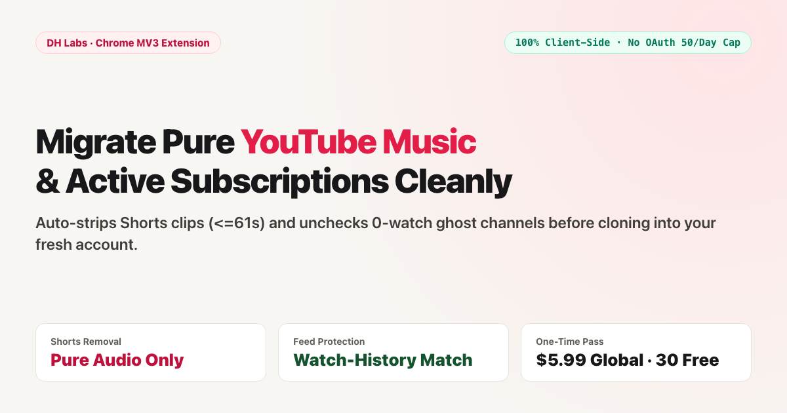
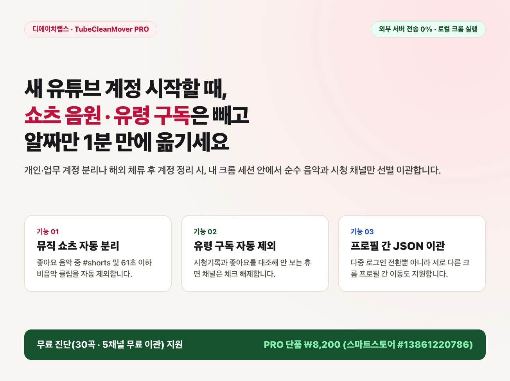
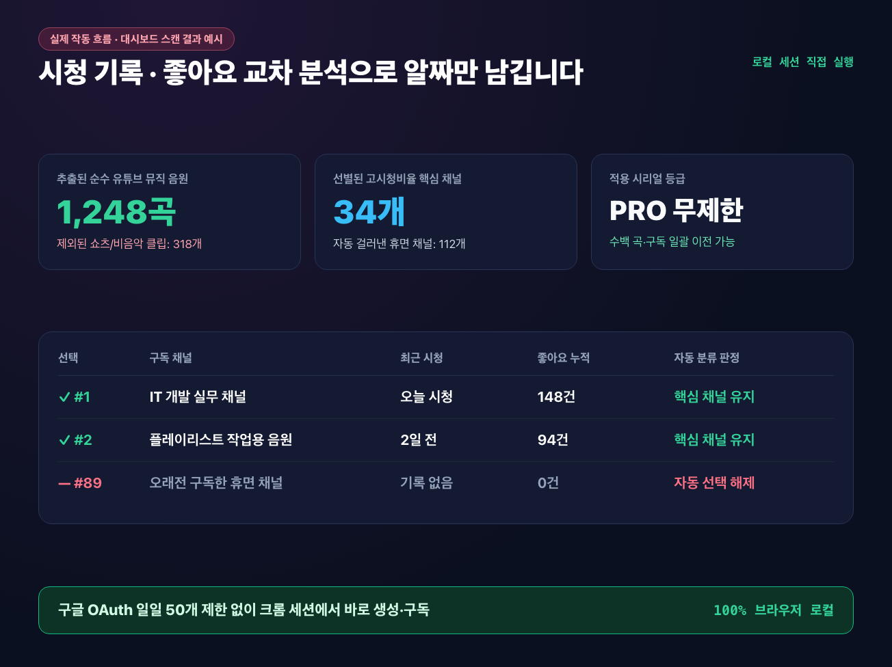
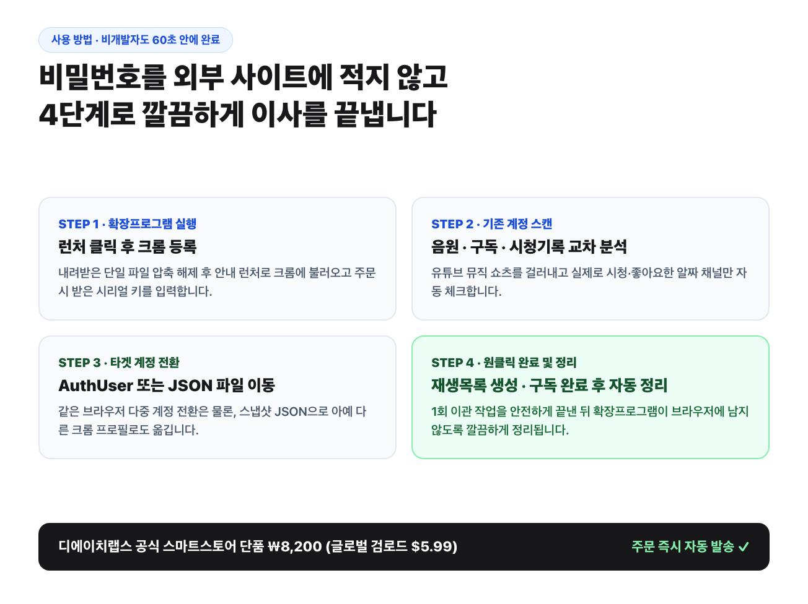

새 유튜브 계정 시작 시,
쇼츠·유령 구독은 빼고
알짜만 1분 만에 옮기세요.
개인·업무용 계정 분리나 해외 체류·프로젝트 종료 후 계정을 새로 꾸릴 때, 유튜브 뮤직 좋아요 음원에서 #shorts·61초 이하 클립을 덜어내고 최근 시청 기록이 있는 활성 채널만 내 크롬 브라우저 안에서 안전하게 이관합니다.

TubeCleanMover PRO란 무엇인가요?
TubeCleanMover PRO는 디에이치랩스(DH Labs, TCM-PRO-V1)가 개발한 100% 브라우저 로컬 크롬 확장프로그램(MV3)입니다. 구글 계정 비밀번호를 외부 서버로 보내지 않고 현재 크롬 세션의 SAPISIDHASH 인증을 통해 ① 유튜브 뮤직 좋아요(list=LL/LM)에서 #shorts·61초 이하 비음악 클립을 자동 분리해 비공개 플레이리스트 생성 및 좋아요 동기화를 실행하고, ② feed/history 시청기록과 list=LL 좋아요 내역을 대조해 실제 시청하는 채널만 남기며, ③ authuser 다중 로그인 및 크롬 프로필 간 로컬 JSON 스냅샷 내보내기/가져오기를 지원합니다.
일반 이관 웹툴과 TubeCleanMover PRO는 무엇이 다른가요?
| 비교 항목 | 일반 OAuth 웹 이관 서비스 | TubeCleanMover PRO (로컬 크롬 MV3) |
|---|---|---|
| 구글 계정 보안 | 외부 웹 대시보드에 OAuth 권한 위임 및 원격 토큰 저장 | 외부 서버 0% · 사용자 크롬 로컬 세션(SAPISIDHASH)에서만 실행 |
| 유튜브 뮤직 쇼츠 혼입 | 일반 영상·쇼츠 구분 없이 뭉뚱그려 옮겨져 음악 감상 흐름 방해 | #shorts/#short/#쇼츠 및 앨범 메타 없는 61초 이하 클립 자동 분리 |
| 구독 채널 정리 수준 | 몇 년 전 눌러둔 휴면 채널까지 100% 복사해 새 피드 오염 | feed/history·list=LL 교차 대조로 안 보는 유령 채널 자동 체크 해제 |
| 구독 일일 처리 한도 | 구글 OAuth 공용 할당량 때문에 하루 50건 안팎에서 중단 | 크롬 내 직접 요청 + 안전한 지연 간격 조절로 수백 건 일괄 처리 |
| 다른 크롬 프로필 이동 | 같은 브라우저 세션 전환만 지원 | authuser 슬롯 전환뿐 아니라 로컬 JSON 파일 내보내기·가져오기 완벽 지원 |
실제 작동 화면과 4단계 이관 흐름은 어떻게 되나요?

1. 순수 음악·구독 선별 스캔 — 좋아요 목록과 구독 채널을 먼저 로컬에서 점검합니다.

2. 고시청비율 채널 자동 선별 — 최근 본 채널만 남기고 0건 휴면 채널은 체크 해제합니다.

3. 60초 로드 후 완료 및 정리 — AuthUser 또는 JSON 파일로 옮긴 뒤 깔끔하게 마칩니다.
33초 작동 요약 영상으로 흐름 확인하기
왜 먼저 '무료 진단 30곡·5채널'부터 체험하나요?
크롬 웹스토어 심사 대기를 거치지 않고 다운로드한 ZIP 압축을 푼 뒤 chrome://extensions 개발자 모드에서 60초 안에 바로 띄울 수 있습니다.
- 유료 시리얼 키 입력 전에도 내 계정에서 걸러지는 쇼츠 수·유령 채널 수를 무제한 스캔해 확인합니다.
- 실제 테스트 이관도 순수 음원 30곡 + 활성 채널 5개까지는 무료로 즉시 실행됩니다.
- 전체 일괄 이관이 필요할 때만 주문 즉시 발급되는
TCM-PRO-...시리얼 키로 제한을 해제하면 됩니다.
공식 판매 채널 및 가격표 (국내 · 글로벌 1회 결제)
| 채널 / SKU | 제공 구성 및 라이선스 | 가격 | 바로가기 |
|---|---|---|---|
네이버 스마트스토어 (국내 공식)TCM-PRO-V1 |
TubeCleanMover PRO 크롬 MV3 확장 ZIP 파일 + 한국어 설치 런처 가이드 + TCM-PRO- 무인 시리얼 키 즉시 발송 |
₩8,200 (1회 영구 소장) |
스마트스토어 구매 → |
Gumroad Global Storetubecleanmover |
Global English Chrome MV3 ZIP + 100% client-side offline SHA-256 PRO serial key (Apple Pay / PayPal / Card) | $5.99 USD (One-Time) |
Gumroad Global → |
자주 묻는 질문 (FAQ)
Q1. 크롬 웹스토어 없이 어떻게 설치하나요?
구매 완료 후 다운로드한 ZIP 파일의 압축을 풀고, 크롬 주소창에 chrome://extensions를 입력해 우측 상단 '개발자 모드'를 켠 뒤 '압축해제된 확장 프로그램을 로드합니다'로 폴더를 지정하면 즉시 실행됩니다.
Q2. 서로 다른 크롬 프로필(예: 개인 크롬 ↔ 업무용 크롬) 간에도 옮길 수 있나요?
네. 기존 계정 스캔 결과를 로컬 JSON 스냅샷 파일로 저장한 다음, 타겟 크롬 프로필에서 TubeCleanMover를 열어 JSON 파일을 불러오면 계정 간 비밀번호 공유 없이 깔끔하게 이관됩니다.
Q3. 내 시청 기록이나 계정 정보가 개발사 서버로 전송되나요?
전혀 전송되지 않습니다. manifest.json 권한은 www.youtube.com과 music.youtube.com 로컬 탭 조작에만 제한되며, 스캔·재생목록 생성·구독 복원은 모두 사용자 브라우저 안에서만 동작합니다.